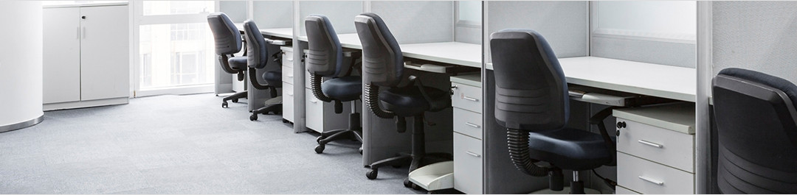

工程部

材料要求
1. 地毯的品种、规格、主要性能和技术指标必须符合设计要求。应有出厂合格证明。
2. 胶粘剂：无毒、不霉、快干、0.5h之内使用张紧器时不脱缝，对地面有足够的粘结强度、可剥离、施工方便的胶粘剂，均可用于地毯与地面、地毯与地毯宫接拼缝处的粘结。一般采用天然乳胶添加增稠剂、防霉剂等制成的胶粘剂。
3. 倒刺钉板条：在1200mm*24mm*6mm的三合板条上钉有两排斜钉(间距为35-40mm)，还有五个高强钢钉均匀分布在全长上(钢钉间距约400mm左右，距两端各约100mm左右)。
4. 铝合金倒刺条：用于地毯端头露明处，起固定和收头作用。多用在外门口或其他材料的地面相接处。
5. 铝压条：宜采用厚度为2mm左右的铝合金材料制成，用于门框下的地面处，压住地毯的边缘，使其免于被踢起或损坏。
主要机具
裁毯刀、裁边机、地毯撑子(大撑子撑头、大撑子承脚、小撑子)、扁铲、墩拐、手枪钻、割刀、剪刀、尖嘴钳子、漆刷橡胶压边滚筒、熨斗、角尺、直尺、手锤、钢钉、小钉、吸尘器、垃圾桶、盛胶容器、钢尺、合尺、弹线粉袋、小线、扫帚、胶轮轻便运料车、铁簸箕、棉丝和工具袋、拖鞋等。
作业条件
1.在地毯铺设之前，室内装饰必须完毕。室内所有重型设备均已就位并已调试，运转，并经核验全部达到合格标准。
2.铺设楼地面毯的基层，要求表面平整、光滑、洁净，如有油污，须用丙酮或松节油擦净。如为水泥楼面，应具有一定的强度，含水率不大于8%。
3.地毯、衬垫和胶粘剂等进场后应检查核对数量、品种、规格、颜色、图案等是否符合设计要求，如符合应按其品种、规格分别存放在干燥的仓库或房间内。用前要预铺、配花、编号，待铺设计按号取用。
应事先把需铺设地毯的房间、走道等四周的踢脚板做好。踢脚板下口均施工工艺
应离开地面8mm左右，以便将地毯毛边掩入踢脚板下。
4.大面积施工前应先放出施工大样，并做样板，经质检部门鉴定合格后方可组织按样板要求施工
触屏版
|
电脑版
京ICP备11048675号-1 Copyright © 2004-2013 www.hongyedt.com ALL Rights Reserved
公司简介
企业荣誉
厂房设备
技术中心
地毯资讯
产品展示
经典案例
工程部
设计部
售后服务
联系我们